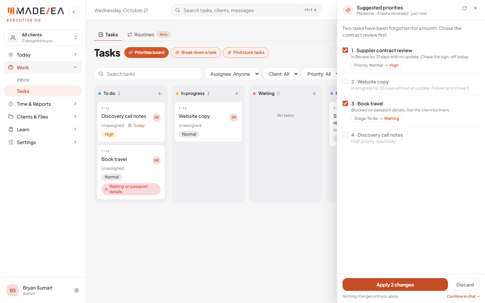
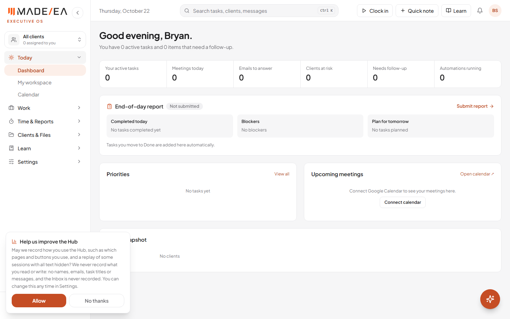
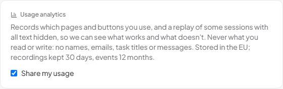

An AI that reads the whole board, and PostHog to the plan
The actions from the 21 October call with Abder are done. "Prioritize board" now has the AI read every task and decide today's order. PostHog is live across the Hub, its database and its AI, built to the PostHog tracking plan, and recording real use since this afternoon. The dashboards are being set up in PostHog and will be finished tomorrow.
Work done 21–22 October 2026Previous report 21 OctoberStatus Live
At a glance
3 of 3sources sending to PostHog: the Hub, its database and its AI
40+named events from the tracking plan's catalog
0names, emails, task titles or messages sent to PostHog
On the call, Abder said the old "Prioritize board" only showed what anyone can see by eye. It now sends every open task, in every column, to the AI with its facts: the stage, how long since it was last updated, due date, blocker, approval and checklist. The AI decides today's order and gives a reason for each. It catches what Abder asked for:
Forgotten work: "In Review for 31 days with no update. Chase the sign-off today."
Blocked tasks, and what's blocking them: "Blocked on passport details. Ask the client for them."
Overdue and due-today work, with priority taken into account.
Its answers are checked before they're shown: only real tasks, at most 5 suggested changes, due dates only in the future, and it can never mark a task done. Nothing changes until "Apply", with Undo for 10 seconds. If the AI can't be reached, the board's own order is shown and says so. Abder confirmed "Break down a task" and "Find stuck tasks" were already right, so they are unchanged.

Suggested priorities: the forgotten review and the month-old task first, each with a reason. Test account with sample tasks.
2Live
PostHog, built to the tracking plan
PostHog is set up as the PostHog tracking plan (October 2026) describes, so it can answer the plan's five questions: are EAs using the app every day, do they keep the daily routine, which features are used, is the AI worth its cost, and did the redesign help. Events come from three places, and all three were checked arriving in PostHog today:
The Hub (browser): pages opened and the plan's named actions, such as a task filter used, an AI action clicked, shown, applied or dismissed, Madeline opened, an EOD started, and a timesheet period changed. Every event carries the person's role, workspace, current client, app version and theme, so any chart can be split by them.
The database: the events that measure the business are sent by the database itself, so they can't be lost or faked: a task created or moved, clock in, pause and clock out, an EOD report submitted, a message sent, and an account connected.
The AI: every call to the AI is logged with its model, tokens, cost and speed, never the question or the answer. Questions stopped for being off-topic are counted too.
Hosting is PostHog's EU cloud (Frankfurt). Events go through the Hub's own web address, so ad blockers don't drop them. Session recordings are on for 20% of sessions longer than 5 seconds.
3Live
Privacy and consent
The plan says "we track what people do, never what they read or write." So:
Asked first: nothing is recorded until each person agrees. Their choice is saved on their account, so it follows them to any computer, and it can be changed any time in Settings.
No content: no names, emails, task titles, notes or messages in any event. People are identified by an internal ID only, and that is cleared when they sign out.
Recordings show no text: all text on screen and everything typed is hidden. The Inbox is never recorded, and the Password Manager, Client Vault, Screenshots and Uploads pages are left out entirely. Client accounts send page and button events only, never a recording.
Privacy policy: the Hub's privacy page has a new "Usage analytics" section that explains all of this.

Asked once, before anything is recorded. Test account.

Settings: the same choice, changeable any time. Test account.
4In progress
PostHog dashboards and alerts
The plan's five dashboards are created in PostHog and being filled chart by chart:
Adoption: done. Daily and weekly active users by role, and the plan's north star: EAs who submit an EOD report on at least 4 of 5 working days.
Daily routine: the routine funnel (open the Hub, clock in, finish a task, file the EOD) and the EOD submission rate are in. One more chart to go.
Feature usage, AI and Redesign impact: to be filled tomorrow, along with the three alerts: the EOD rate falling below 60%, an AI cost spike, and AI errors over 2% in an hour.
Expect thin numbers this weekTracking started this afternoon, and only for people who clicked Allow. The charts fill in as the team uses the Hub.
5Prepared
For Abder: recommendations tracker and briefing
A tracker of Abder's recommendations (as agreed on the call): all 21, from the 13 October call to today, each with its status and where to test it.
A briefing on what he asked to see:
The delegation coach: it is already in the client portal under Delegate, and handing a plan over creates a task on the EA's board. The briefing includes its flow and prompts.
The Academy: what exists today and what he will design.
The team's testing feedback.
The delegation coach needs its automation subscription renewedThe coach runs through MadeEA's own automation service, whose plan has lapsed. Until it is renewed, the coach can't answer.
What's next
Finish the PostHog dashboards (Daily routine, Feature usage, AI, Redesign impact) and set the three alerts.
Renew the automation subscription so the delegation coach works again.
Abder tests the AI Prioritize board, and sends the other pages' AI action definitions.
Academy: Abder designs the continuous-training views once HR sends the outline.